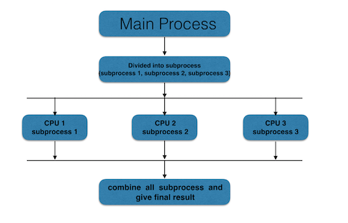
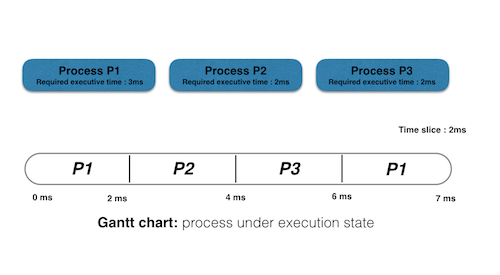

Parallelism vs. Concurrency
Table of Contents
1. Motivation
Most of the time I have found that people get confused between Parallelism and Concurrency. So for that I am trying to explain difference between them.
2. Parallelism
Term parallelism refer to techniques to make program faster by performing several computation task in parallel. That means an application splits its tasks up into smaller subtasks which can be processed in parallel, for instance on multiple CPUs at the exact same time. The key Thing Which required in it is hardware with multiple processing unit (ALU). In many cases the sub-computations are of the same structure, but this is not necessary. Key problem of parallelism is to reduce data dependencies in order to be able to perform computations on independent computation units.

Figure 1: Parallel processing
Types of Parallel Processor Systems
- Single instruction, single data (SISD) stream: A single processor executes a single instruction stream to operate on data stored in a single memory. Uniprocessors fall into this category.
- Single instruction, multiple data (SIMD) stream: A single machine instruction controls the simultaneous execution of a number of processing elements on a lockstep basis. Each processing element has an associated data memory, so that each instruction is executed on a different set of data by the different processors. Vector and array processors fall into this category.
- Multiple instruction, single data (MISD) stream: A sequence of data is transmitted to a set of processors, each of which executes a different instruction sequence. This structure is not commercially implemented.
- Multiple instruction, multiple data (MIMD) stream: A set of processors simultaneously execute different instruction sequences on different data sets. SMPs, clusters, and NUMA systems fit into this category.
Threading is one of the most well known approaches to attaining Python concurrency and parallelism. Threading is a feature usually provided by the operating system. Threads are lighter than processes, and share the same memory space. CPython interpreter does not support true multi-core execution via multithreading because of Global Interpreter Lock (GIL) to avoid various problems that arise when using threading models that implicitly allowing concurrent access to objects from multiple threads of execution. The multiprocessing package offers both local and remote concurrency, effectively side-stepping the Global Interpreter Lock by using subprocesses instead of threads. Due to this, the multiprocessing module allows the programmer to fully leverage multiple processors on a given machine. And it runs on both Unix and Windows. A prime example of this is the Pool object which offers a convenient means of parallelizing the execution of a function across multiple input values, distributing the input data across processes (data parallelism). The following example demonstrates the data parallelism using Pool.
from multiprocessing import Pool import time def f(x): for i in range( 1 ,x +1 ): print('Process no : %d value of i: %d'%(x ,i)) time.sleep( 5 ) if __name__ == '__main__': p = Pool( 5 ) p.map(f, [2 , 3 , 4 ])
In Python to use multiple processes we create a multiprocessing Pool. With the map method it provides, we will pass the list of Number to the pool, which in turn will spawn 5 new processes and use each one to compute in parallel. This is true parallelism, but it comes with a cost. The entire memory of the script is copied into each subprocess that is spawned. In this simple example it isn't a big deal, but it can easily become serious overhead for non-trivial programs.
3. Concurrency
The term Concurrency refers to techniques that make program more usable. Concurrency can be implemented and is used a lot on single processing units, nonetheless it may benefit from multiple processing units with respect to speed. concurrency can be achived with the single processing unit. multipel proceesor unit will help with respect to speed. if oprating system is called s multi -tasking operating system this is a sysnonym for supporting concurrency i.e multitasking opereting system is concurreny support system. If you can load multiple documents simultaneously in the tabs of your browser and you can still open menus and perform more actions, this is concurrency.

Figure 2: Concurrent processing
As we discussed earlier threading is one of the most well known approaches to attaining Python concurrency and parallelism. And CPython interpreter does not support true multi-core execution via multithreading because of Global Interpreter Lock (GIL). So the threading models implicitly allowing concurrent access to objects from multiple threads of execution. The following example demonstrates the data concurrency using ThreadPoolExecutor.
import shutil with ThreadPoolExecutor(max_workers = 4 ) as e: e.submit(shutil.copy, 'src1.txt', 'dest1.txt') e.submit(shutil.copy, 'src2.txt', 'dest2.txt') e.submit(shutil.copy, 'src3.txt', 'dest3.txt') e.submit(shutil.copy, 'src4.txt', 'dest4.txt')
4. Just for remember
If you run distributed-net computations in the background while working with interactive applications in the foreground, that is concurrency. On the other hand dividing a task into packets that can be computed via distributed-net clients, this is parallelism.